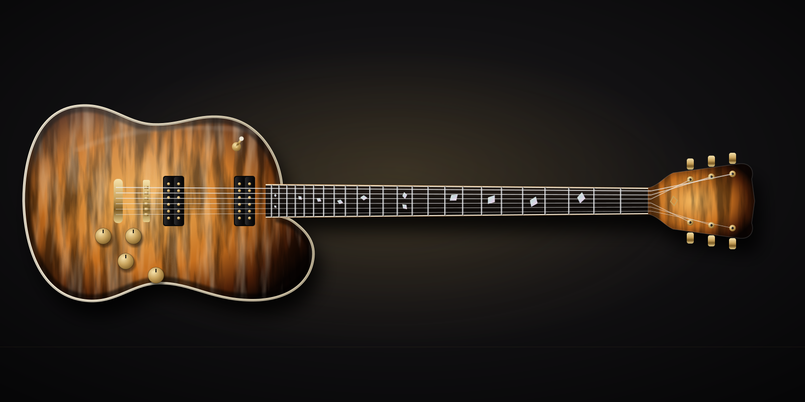
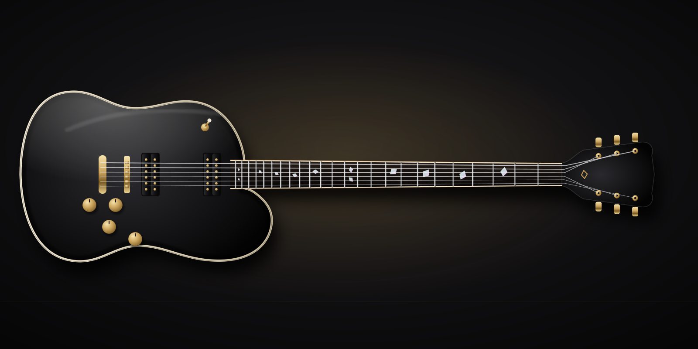

The Basalt
Basalt is the dense rock that cools into columns. The guitar has the same weight and the same patience. A mahogany back under a hand-carved maple top, a glued-in neck and two humbuckers give you thick mids and notes that hang in the air.
Standard build
Warm, thick and sustaining, with a carved top that keeps the low end tight. Made for blues, classic and hard rock, and anyone who likes a guitar with some weight on the strap.
Everything here is a starting point. Woods, profile, radius, pickups, hardware and finish can all change during your spec call.
| Body | Mahogany back, hand-carved maple top, cream binding |
|---|---|
| Neck | Quench neck: five-piece kiln-roasted maple with walnut stringers, glued-in set neck, long tenon. Profile hand-carved to your measurements (rounded C by default). |
| Fretboard | Ebony, 12″ radius, 22 stainless steel frets, bound, pearl shard inlays |
| Scale | 24.75″ |
| Pickups | Two humbuckers with coil split; open or covered |
| Bridge | Tune-o-matic-style bridge with stop tailpiece |
| Tuners | Locking, 3+3 |
| Weight | Typically 8.0–8.8 lb |
| In the case | Hardshell case, Provenance File, setup report |
Quench neck, standard on every Basalt
Quench is how we make every neck: maple roasted in our own kiln, laminated from five quartersawn strips, then rested at least 60 days before it is carved by hand. The result is a neck built to resist seasonal movement, with a dry, glassy feel under the hand.

Sound clips and video
We’ll record every model dry and through an amp, with no mixing tricks, as soon as the first instruments are finished.
Playthrough of the Basalt: clean, crunch and high gain.
Clean, direct in.
Through an amp, mic’d.
What comes with it
- Instrument number, one sequence across every model starting at No. 1, stamped in the neck heel and logged in our build register.
- Signed build sheet with your full spec and final setup measurements: action, relief, pickup heights, weight.
- Wood-source record: species, supplier, board ID and the Quench batch your neck came from.
- Luthier’s signature from the one person who built it, start to finish.
Related
- Nitro vs. poly: what a finish really changes
- What actually makes a guitar worth thousands?
- The Andesite, T-style, from $4,600
- The Tephra, superstrat, from $4,800
- The Rhyolite, chambered offset, from $5,200
- The Scoria, headless multiscale, from $6,400
Open the configurator with the Basalt already selected
The guitar and the estimate update as you change each option. When you send it, a luthier replies within two business days, usually with questions about how you play.
Configure the Basalt